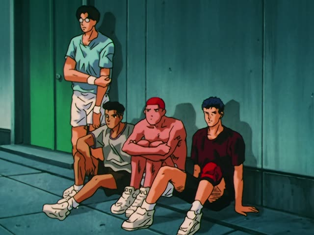
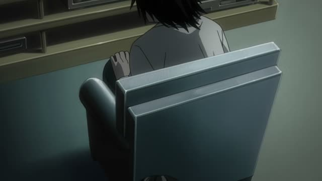
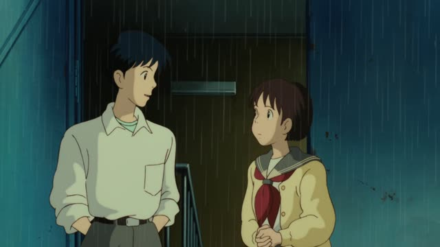

～かどうか
Kekkon Dekinai Otoko · Episode 2
問題は、それを実行に移すかどうかですね。
"The question is whether you'll actually do it."
～かどうか means "whether or not": a yes/no question inside a bigger sentence. Plain form + かどうか: 来るかどうか分からない, "I don't know whether he'll come".
On this card, the doctor tells Kuwano he knows what to eat, but will he do it? ですね makes it polite.
After a noun or な-adjective, no だ: 本当かどうか.

Slam Dunk · Episode 90
正直、俺でも勝てるかどうか分からんぜ、あいつには。
"Honestly, even I don't know if I could beat him."
On this card, a player talks about Sakuragi's rival. 勝てるかどうか: whether he can win or not.
Quick Examples
Before a party.
田中さんが来るかどうか分からない。
"I don't know if Tanaka is coming."
CasualChecking a rumor.
それが本当かどうか確かめます。
"I'll check whether it's true."
Noun: no だ.
PoliteChoosing a restaurant.
おいしいかどうか、食べてみないと。
"We won't know if it's good until we try."
CasualA form at the office.
参加するかどうか、明日までに教えてください。
"Please tell me by tomorrow whether you'll join."
PoliteWith and without
田中さんは来ますか？
"Is Tanaka coming?" A question.
田中さんが来るかどうか知りません。
"I don't know whether Tanaka is coming."
Examples from Media

Death Note · Episode 11
そして、裁くかどうか決めるのはキラ。
"And Kira decides whether to judge them."
Samurai Champloo · Episode 10
勝てるかどうか分からない相手ってことだ。
"It means he's someone he doesn't know if he can beat."
Dungeon Meshi · Episode 3
そもそも、砂抜きが必要なのかどうか…
"Is it even necessary to clean out the sand, or not..."
Shirokuma Cafe · Episode 11
恋人同士かどうかわかんないんじゃない？
"You can't tell whether they're a couple, can you?"
Noun: no だ.
Oishinbo · Episode 14
ばってん、うまくいくかどうか
"But whether it'll work..."
ばってん = Kyushu dialect for けど.

Whisper of the Heart
見込みがあるかどうか見てくれるって。
"He'll see whether I have potential."